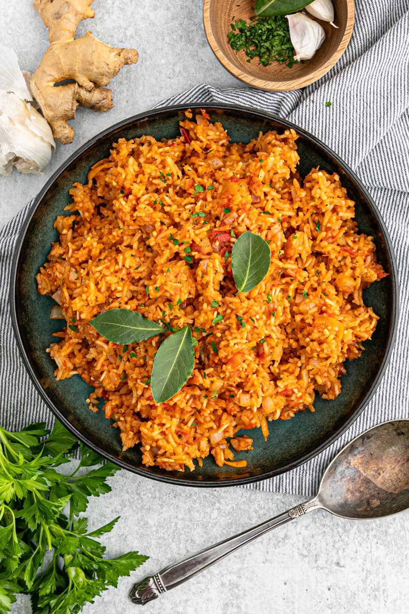

Jollof Rice

Jollof Rice: A West African Culinary Gem
Jollof rice is a delicacy that began in West Africa, but because of frequent cultural exchange amongst various regions, the recipe continues to spread far and wide. It is considered a celebratory dish and popular in West African nations like Nigeria, Ghana, and Senegal.
Because there are so many variations, this jollof rice recipe is probably a combination of a lot of different interpretations. There are ongoing debates across West Africa that argue which region prepares the best version of jollof rice.
Ingredients
- 2 cups long-grain parboiled rice
- 1/4 cup vegetable oil
- 1 large onion, finely chopped
- 2 cloves garlic, minced
- 1 inch ginger, minced
- 1 red bell pepper, chopped
- 1 green bell pepper, chopped
- 1 cup tomato puree
- 1/2 cup tomato paste
- 2 cups chicken broth (or water)
- 2 teaspoons thyme
- 2 teaspoons curry powder
- 1 teaspoon smoked paprika
- 2 bay leaves
- Salt and pepper to taste
- 2 cups mixed vegetables (carrots, peas, green beans)
- 1 pound chicken, cooked and shredded (optional)
- Fresh parsley or cilantro, for garnish
Steps
- Prepare the Rice: Rinse the rice under cold water until the water runs clear. Drain and set aside.
- Cook the Base: Heat the vegetable oil in a large pot over medium heat.
Add the chopped onions and sauté until translucent, about 5 minutes.
Add the minced garlic and ginger, and cook for another 2 minutes.
- Add Peppers and Tomato: Stir in the chopped red and green bell peppers, and cook for another 5 minutes.
Add the tomato puree and tomato paste. Cook for about 10-15 minutes, stirring occasionally, until the tomato reduces and loses its raw taste.
- Season the Base: Add the thyme, curry powder, smoked paprika, bay leaves, salt, and pepper.
Mix well to combine all the ingredients.
- Incorporate Rice:
- Add the rinsed rice to the pot, stirring to coat the rice with the tomato mixture.
Pour in the chicken broth (or water) and bring to a boil.
- Simmer: Once boiling, reduce the heat to low, cover the pot with a tight-fitting lid, and simmer for 20-25 minutes.
Check occasionally and stir to prevent sticking, adding a bit more water or broth if necessary.
- Add Vegetables and Protein: After the rice is cooked, stir in the mixed vegetables and cooked chicken (if using).
Cover and cook for another 5-10 minutes, until the vegetables are tender and the flavors are well combined.
- Garnish and Serve: Remove the bay leaves and discard them.
Fluff the rice with a fork, garnish with freshly chopped parsley or cilantro, and serve hot